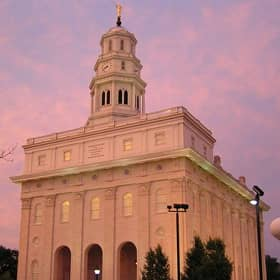
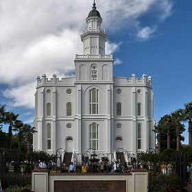

Temple Album
Home
Old
New
Large
Small
Home
Salt Lake Utah Temple
San Diego California Temple
Washington D.C. Temple
Laie Hawaii Temple
Cardston Alberta Temple
Rome Italy Temple

Nauvoo Illinois Temple
Mexico City Mexico Temple

St. George Utah Temple